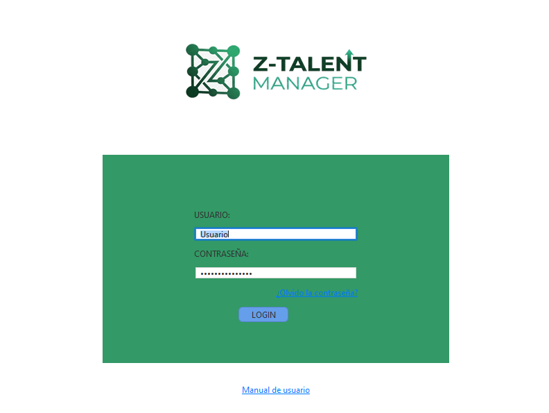
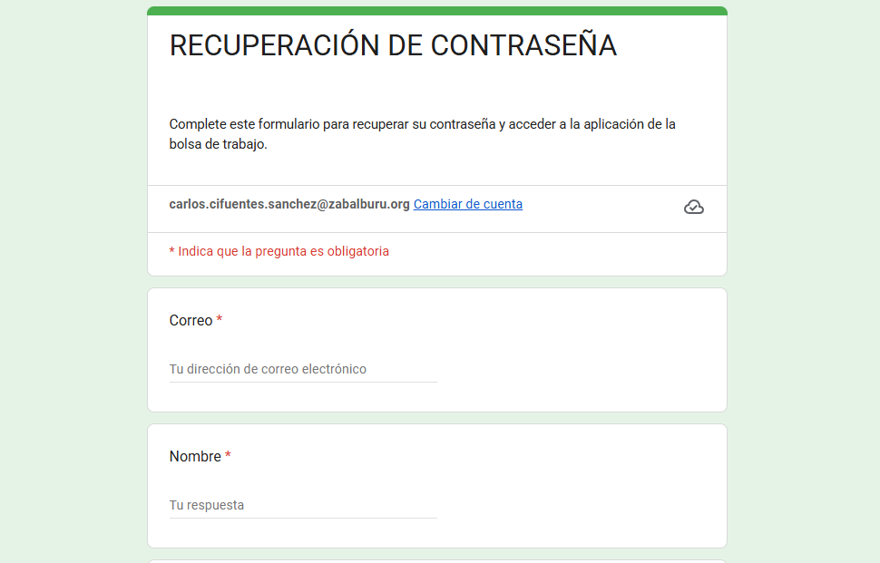
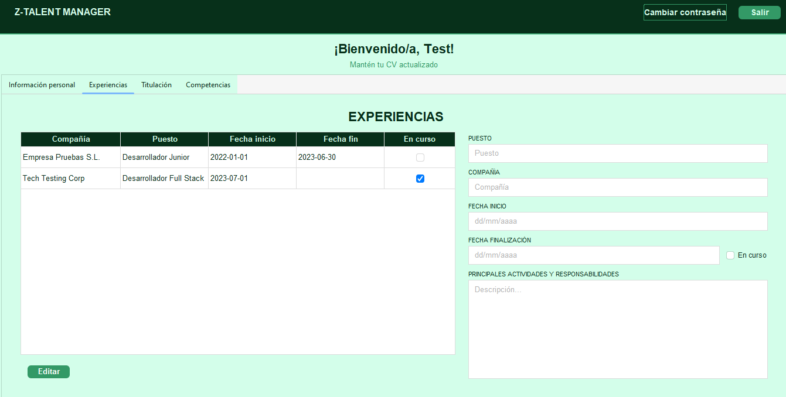
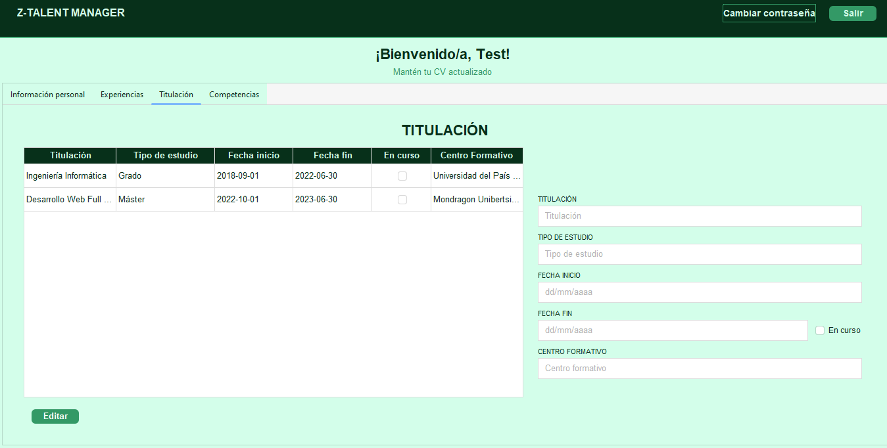

Login
Esta sección es la puerta de entrada a tu perfil profesional. Para garantizar la seguridad de tu información y personalizar tu experiencia, es necesario que te identifiques en nuestro sistema.

Bienvenido a la guía completa de uso de nuestra aplicación. Aquí encontrarás explicaciones detalladas y respuestas a preguntas frecuentes.
Descargar AplicaciónEsta sección es la puerta de entrada a tu perfil profesional. Para garantizar la seguridad de tu información y personalizar tu experiencia, es necesario que te identifiques en nuestro sistema.

Dentro de la configuración de tu perfil, dispones de la opción de modificar tu clave de acceso en cualquier momento. Esta función es ideal si deseas actualizar tu seguridad o simplemente cambiar tu clave actual por una que te resulte más sencilla de recordar.

Para garantizar la seguridad y accesibilidad de tu perfil profesional, el sistema permite actualizar tu clave desde la configuración siempre que conozcas la contraseña actual y desees sustituirla por una más sencilla de recordar; no obstante, en caso de haber olvidado tus credenciales por completo, deberás completar un formulario de Google para verificar tu identidad, permitiendo así que el administrador valide tu solicitud, realice el cambio interno y te envíe las nuevas credenciales de acceso por correo electrónico para que puedas retomar tu actividad de inmediato.

Crea y gestiona tu perfil. Sube tu currículum, añade experiencia laboral y formación académica para destacar ante las empresas.


Administra todos tus documentos profesionales en un solo lugar. Sube diferentes versiones de tu currículum, cartas de presentación, certificados y otros documentos relevantes. Adjúntalos fácilmente a tus candidaturas y mantenlos siempre accesibles.

Utiliza las herramientas de búsqueda avanzada para encontrar ofertas de trabajo que coincidan con tu perfil. Filtra por sector, ubicación, tipo de contrato, salario y experiencia requerida. Guarda tus búsquedas para recibir notificaciones automáticas cuando se publiquen nuevas ofertas que coincidan.
Versión 2.5.0
Versión 2.5.0
Versión 2.5.0